정보처리산업기사 (2009-03-01 기출문제)
1과목: 데이터 베이스
1. 다음 인접행렬(Adjacency Matrix)에 대응되는 그래프(Graph)를 그렸을 때, 옳은 것은?
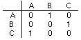
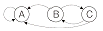
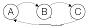
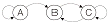
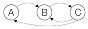
(정답률: 79%)

2. 데이터베이스의 정의 중 다음 설명에 해당하는 것은?
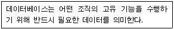
- 통합된 데이터(Integrated Data)
- 저장 데이터(Stored Data)
- 운영 데이터(Operational Data)
- 공용 데이터(Shared Data)
(정답률: 76%)
3. 속성(Attribute)의 수를 의미하는 것은?
- Degree
- Tuple
- Cardinality
- Domain
(정답률: 71%)
4. 다음 질의문 실행의 결과는?
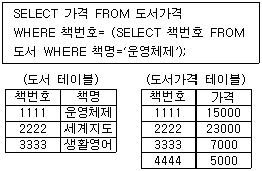
- 5000
- 7000
- 15000
- 23000
(정답률: 84%)
5. 다음은 무엇에 관한 설명인가?
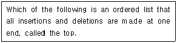
- Array
- Stack
- Queue
- Binary Tree
(정답률: 76%)
6. 데이터베이스 설계 단계 중 데이터베이스의 효율성 제고를 위해 파일저장 구조 및 접근 경로 등을 설계하는 단계는?
- 구조적 설계 단계
- 논리적 설계 단계
- 물리적 설계 단계
- 데이터베이스 구현 단계
(정답률: 56%)
7. 데이터베이스의 구성 요소 중 개체(Entity)에 대한 설명으로 적합하지 않은 것은?
- 속성들이 가질 수 있는 모든 값들의 집합이다.
- 데이터베이스에 표현하려고 하는 현실 세계의 대상체이다.
- 유명, 무형의 정보로서 서로 연관된 몇 개의 속성으로 구성된다.
- 파일의 레코드에 대응하는 것으로 어떤 정보를 제공하는 역할을 수행 한다.
(정답률: 54%)
8. 개체 무결성 제약 조건에 대한 다음 설명 중 ( )의 내용으로 옳은 것은?
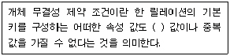
- NULL
- TUPLE
- DOMAIN
- FOREIGN KEY
(정답률: 90%)
9. VIEW의 삭제시 사용되는 SQL 명령은 무엇인가?
- NULL VIEW ~
- KILL VIEW ~
- DELETE VIEW ~
- DROP VIEW ~
(정답률: 78%)
10. 개념스키마(Conceptual Schema)에 대한 설명으로 옳지 않은 것은?
- 조직이나 기관의 총괄적 입장에서 본 데이터베이스의 전체적인 논리적 구조이다.
- 실제 데이터베이스가 기억 장치 내에 저장되어 있으므로 저장 스키마라고도 한다.
- 모든 응용 프로그램이나 사용자들이 필요로 하는 데이터를 종합한 조직 전체의 데이터베이스 구조이다.
- 데이터베이스 파일에 저장되는 데이터의 형태를 나타낸 것으로 단순히 스키마라고도 한다.
(정답률: 58%)
11. 데이터베이스의 특성으로 옳지 않은 것은?
- 실시간 접근성(Real-Time Accessibility)
- 주소에 의한 참조(Address Reference)
- 동시 공유(Concurrent Sharing)
- 계속적인 변화(Continuous Evolution)
(정답률: 73%)
12. 다음 그림과 같은 트리를 후위 순회(Postorder-Traversal)한 결과는?
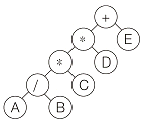
- +**/ABCDE
- AB/C*D*E+
- A*B+C*D/E
- A*B+CD*/E
(정답률: 80%)
13. 릴레이션에 관한 설명 중 옳은 내용으로만 나열된 것은?
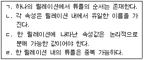
- ㄱ, ㄴ
- ㄱ, ㄷ, ㄹ
- ㄴ
- ㄹ
(정답률: 68%)
14. 다음 자료에 대하여 삽입(Insertion) 정렬을 이용하여 오름차순으로 정렬하고자 할 경우 1회전 후의 결과는?
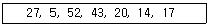
- 5, 27, 43, 20, 14, 17, 52
- 5, 27, 52, 43, 20, 14, 17
- 5, 14, 27, 52, 43, 20, 17
- 17, 27, 5, 52, 43, 20, 14
(정답률: 83%)
15. 다음은 무엇에 대한 설명인가?
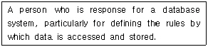
- Database Administrator
- End user
- Application programmer
- Agent
(정답률: 82%)
16. 관계 대수와 관계 해석에 대한 설명으로 옳지 않은 것은?
- 관계 대수는 원하는 정보가 무엇이라는 것만 정의하는 비절차적인 특징을 가지고 있다.
- 관계 해석은 관계 데이터의 연산을 표현하는 방법이다.
- 관계 대수로 표현한 식은 관계 해석으로 표현할 수 있다.
- 관계 해석은 원래 수학의 프레디킷 해석에 기반을 두고 있다.
(정답률: 74%)
17. 다음 자료 구조 중 나머지 셋과 성격이 다른 하나는 무엇인가?
- 데크
- 그래프
- 큐
- 스택
(정답률: 86%)
18. 뷰(View)에 대한 설명으로 옳지 않은 것은?
- 뷰는 데이터의 접근을 제어하게 함으로써 보안을 제공한다.
- 뷰는 데이터의 논리적인 독립성을 제공한다.
- 뷰의 테이블은 가상 테이블이다.
- 뷰의 테이블은 물리적인 구현으로 구성되어 있다.
(정답률: 79%)
19. 스택의 삽입 알고리즘이다. 다음 ①의 내용으로 옳은 것은?
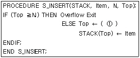
- N+1
- Item+1
- Top+1
- Top-1
(정답률: 71%)
20. 정규화하는 프로젝션 과정 중 부분함수 종속제거는 어느 단계에 속하는가?
- 비정규 릴레이션 → 1NF
- 1NF → 2NF
- 2NF → 3NF
- 3NF → BCNF
(정답률: 75%)
2과목: 전자 계산기 구조
21. 다음과 같은 회로의 명칭은?
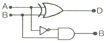
- 전감산기
- 반가산기
- 패리티 검사기
- 반감산기
(정답률: 52%)
22. 주기억 장치와 입ㆍ출력 장치 간에는 시간ㆍ공간적 특성 차이가 있다. 이에 해당되지 않는 것은?
- 동작의 속도
- 버스 구성
- 정보의 단위
- 동작의 자율성
(정답률: 45%)
23. ROM에 대한 설명 중 옳지 않은 것은?
- 기억된 내용을 임의로 변경시킬 수 없다.
- 사용자가 작성한 program이나 data를 기억시켜 처리하기 위해 사용하는 memory이다.
- Read만이 가능하다.
- Micro instruction을 내장하고 있다.
(정답률: 58%)
24. 다음 중 응용 프로그래머가 프로그램을 작성할 때 직접 레지스터의 내용을 다룰 수 있는 레지스터는?
- Index Register
- Instruction Register
- MBR(Memory Buffer Register)
- MAR(Memory Address Register)
(정답률: 49%)
25. 패리티 비트(parity bit)에 관한 설명 중 옳지 않은 것은?
- 기수(odd) 체크에 사용될 경우도 있다.
- 우수(even) 체크에 사용될 경우도 있다.
- 정보 표현의 단위에 여유를 두기 위한 방법이다.
- 정보가 맞고, 틀림을 판별하기 위해 사용된다.
(정답률: 73%)
26. 10진수 15의 그레이 코드(gray code)는?
- 1111
- 1000
- 1010
- 1011
(정답률: 55%)
27. 레지스터에 저장되어 있는 비트들을 모두 1로 만들기 위해 해당 레지스터에 데이터 A를 연산 B로 계산할 때 옳은 것은?
- A : ff, B : OR
- A : 00, B : AND
- A : 00, B : OR
- A : ff, B : AND
(정답률: 53%)
28. 인스트럭션의 수행 시간에 관한 설명으로 옳지 않은 것은?
- memory read/write cycle이 인스트럭션 수행시간에 지배적 영향을 준다.
- 수행 시간은 인스트럭션 종류에 따라 다르다.
- OP-code만으로 인스트럭션 수행시간을 모두 알 수 있다.
- 인스트럭션 수행 시간은 여러 개의 machine cycle로 구성된다.
(정답률: 63%)
29. 마이크로프로그램에 대한 설명 중 옳지 않은 것은?
- 마이크로프로그램은 소프트웨어라고 하는 것보다 하드웨어적인 요소가 많아 펌웨어(firmware)라고도 불린다.
- 제어기를 구성하는 방법으로 마이크로프로그램이 이용될 수 있다.
- 마이크로프로그램은 전자계산기의 제작 단계에서 컨트롤 스토리지(control storage) 속에 저장한다.
- 마이크로프로그램은 마이크로 명령으로 형성되어 있다.
(정답률: 44%)
30. 어떤 프로그램 실행 도중 분기(branch)가 발생했다면(인터럽트 포함) CPU내 어떤 장치의 내용이 바뀌었음을 의미하는가?
- ALU(Arithmetic and Logic Unit)
- PC(Program Counter)
- MAR(Memory Address Register)
- MDR(Memory Data Register)
(정답률: 51%)
31. 다음 중 컴퓨터 메모리에 저장된 바이트들의 순서에 대한 설명으로 틀린 것은?
- big-endian과 little-endian 방식이 있다.
- big-endian은 큰 쪽(MSB)이 먼저 저장되는 방식이다.
- 모토로라 마이크로프로세서는 big-endian 방식을 사용한다.
- 인텔 프로세서는 big-endian 방식을 사용한다.
(정답률: 41%)
32. 인터럽트 요인이 발생하였을 때 CPU가 처리하지 않아도 되는 것은?
- 프로그램 카운터의 내용
- 관련 레지스터의 내용
- 스택(stack)의 내용
- 입ㆍ출력장치의 내용
(정답률: 48%)
33. 다음 중 인터럽트의 발생 원인이 아닌 것은?
- 정전
- 서브 프로그램 호출
- 오버플로우(overflow) 발생
- 오퍼레이터(operator)의 조작
(정답률: 59%)
34. 다음 중 병렬 처리 시스템 방식이 아닌 것은?
- 배열 처리기 방식
- 약 결합 시스템
- 파이프라인 방식
- 주종 다중 처리기
(정답률: 45%)
35. 수치정보의 표현에 있어서 만족 시켜야 할 조건이 아닌 것은?
- 기억장치의 공간을 적게 차지해야 한다.
- 데이터 처리 및 CPU내에서 이동이 용이해야 한다.
- 10진수와 상호변환이 용이해야 한다.
- 한정된 수의 비트로 나타내므로 정밀도가 낮아야 한다.
(정답률: 77%)
36. 폰 노이만(Von Neumann)형 컴퓨터 인스트럭션의 기능에 포함되지 않는 것은?
- 전달 기능
- 제어 기능
- 보존 기능
- 함수 연산 기능
(정답률: 56%)
37. 다음 입ㆍ출력 방법 중 중앙처리장치의 처리를 가장 많이 필요로 하는 것은?
- 인터럽트
- DMA(DMA 제어기)
- 입ㆍ출력 프로세서(IOP)
- 폴링
(정답률: 40%)
38. 피연산자의 기억 장소에 따른 인스트럭션 분류 중 load 또는 store 인스트럭션의 사용빈도가 매우 낮은 것은?
- 메모리-메모리 인스트럭션 형식
- 레지스터-레지스터 인스트럭션 형식
- 레지스터-메모리 인스트럭션 형식
- 스택 인스트럭션 형식
(정답률: 40%)
39. 인터럽트를 처리하기 위한 우선순위 체제의 기능이 아닌 것은?
- 인터럽트를 동시에 처리할 수 있도록 멀티인터럽트 요청 기능
- 각 장치에 우선순위를 부과하는 기능
- 인터럽트를 요청한 장치의 우선순위를 판별하는 기능
- 우선순위가 높은 것을 먼저 처리할 수 있는 기능
(정답률: 72%)
40. 한 명령의 실행 사이클(execute cycle) 중에 인터럽트 요청이 있어 인터럽트를 처리한 후 CPU가 다음에 수행하는 cycle은?
- fetch cycle
- indirect cycle
- execute cycle
- direct cycle
(정답률: 63%)
3과목: 시스템분석설계
41. 사원 번호의 발급 과정에서 둘 이상의 서로 다른 사람에게 동일한 번호가 부여된 경우에 코드의 어떤 기능을 만족시키지 못한 것인가?
- 표준화 기능
- 식별 기능
- 배열 기능
- 연상 기능
(정답률: 76%)
42. 시스템 평가에서 처리 시간의 견적 방법 중 처리 시간을 계산할 수 있는 프로그램에 의해서 자동적으로 계산하는 방법은 무엇인가?
- 추정에 의한 계산 방법
- 컴퓨터에 의한 계산 방법
- 입력에 의한 계산 방법
- 출력에 의한 계산 방법
(정답률: 64%)
43. 해싱 함수에 의한 주소 계산 기법에서 서로 다른 키 값에 의해 동일한 주소 공간을 점유하여 충돌되는 레코드들의 집합을 의미하는 것은?
- Division
- Chaining
- Collision
- Synonym
(정답률: 59%)
44. 프로세스 설계시 고려 사항으로 거리가 먼 것은?
- 처리 과정을 명확히 표현하여 신뢰성과 정확성을 확보한다.
- 가급적 분류 처리를 최대화 한다.
- 시스템의 상태 및 기능, 구성 요소 등을 종합적으로 표현한다.
- 신 시스템 및 기존 시스템 프로세스의 설계 문제점 분석이 가능하도록 설계한다.
(정답률: 76%)
45. 오류 체크 검사의 종류 중 입력 데이터의 항목이 규정된 범위 내에 있는지를 검사하는 방법은 무엇인가?
- Format Check
- Balance Check
- Logical Check
- Limit Check
(정답률: 71%)
46. 시스템의 기본 요소 중 목표 달성을 위해서 이루어지는 모든 작업들을 통제 조정하는 것은?
- Control
- Feedback
- Process
- Input
(정답률: 69%)
47. 출력 정보 매체화 설계시 검토 사항이 아닌 것은?
- 출력 형식
- 출력 장치
- 출력 주기 및 시기
- 출력 항목명
(정답률: 50%)
48. 파일설계 단계 중 다음 사항과 관계되는 것은?
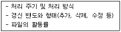
- 파일 항목 검토
- 파일 특성 조사
- 파일 매체 검토
- 파일 편성법 검토
(정답률: 59%)
49. 코드화 대상 항목의 성질 즉 길이, 넓이, 부피, 높이 등을 나타내는 의미가 있는 문자, 숫자, 기호 등을 그대로 사용하는 코드는?
- Sequence Code
- Significant Digit Code
- Block Code
- Decimal Code
(정답률: 66%)
50. 시스템의 개발순서로 가장 적절한 것은?
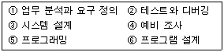
- ④ → ① → ⑥ → ⑤ → ③ → ②
- ④ → ① → ③ → ⑥ → ⑤ → ②
- ① → ③ → ④ → ⑤ → ⑥ → ②
- ④ → ③ → ① → ⑥ → ⑤ → ②
(정답률: 71%)
51. 문서화의 목적으로 거리가 먼 것은?
- 시스템 개발 후의 변경에 따른 혼란을 방지할 수 있다.
- 개발 후에 시스템 유지보수가 용이하다.
- 복수 개발자에 의한 병행 개발이 가능하다.
- 시스템개발 과정에서의 요식적 절차이다.
(정답률: 68%)
52. 소프트웨어 생명주기 모델 중 요구 분석의 어려움을 해결하기 위해 실제 개발할 소프트웨어의 시제품을 직접 개발함으로써 의사 소통의 도구로 이용하여 개발하는 것은?
- Waterfall Model
- Object Oriented Model
- Prototyping Model
- Structured Model
(정답률: 63%)
53. 모듈 작성시 주의사항으로 옳지 않은 것은?
- 모듈 간의 결합도를 높게 한다.
- 이해하기 쉽도록 작성한다.
- 적절한 크기로 설계한다.
- 모듈의 내용이 다른 곳에 적용이 가능하도록 표준화 한다.
(정답률: 67%)
54. 객체 지향 기법에서 다음 설명에 해당하는 것은?
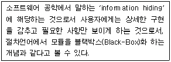
- Class
- Message
- Encapsulation
- Inheritance
(정답률: 65%)
55. 파일 편성 설계에서 순차(Sequential) 편성에 대한 설명으로 옳지 않은 것은?
- 일괄 처리 업무에 적합하다.
- 어떠한 매체라도 순차 편성의 기록 매체가 가능하다.
- 데이터 검색시 검색 효율이 높다.
- 기록 밀도가 높아 기억 공간을 효율적으로 사용할 수 있다.
(정답률: 63%)
56. 다음 중 입ㆍ출력 설계의 표준화에서 다루어지지 않는 사항은?
- 매체의 표준화
- 내용의 표준화
- 형식의 표준화
- 코드의 표준화
(정답률: 39%)
57. 자료 흐름도(Date Flow Diagram)의 구성 요소가 아닌 것은?
- Data Flow
- Process
- Module
- Data Store
(정답률: 51%)
58. 코드 입력시 “2009”를 “2090“으로 기입한 것은 어떤 오류에 해당하는 가?
- Transcription Error
- Transposition Error
- Omission Error
- Addition Error
(정답률: 76%)
59. 입력 설계 단계 중 현장에서 발생한 정보를 언제, 어디서, 누가, 무슨 용도로 사용하는지에 대해 설계하는 단계는?
- 입력 정보 투입에 관한 설계
- 입력 정보 매체에 관한 설계
- 입력 정보 발생에 관한 설계
- 입력 정보 내용에 관한 설계
(정답률: 54%)
60. 마스터 파일의 데이터를 트랜잭션 파일에 의해 추가, 삭제, 교환하여 새로운 마스터 파일을 작성하는 표준 처리 패턴은?
- Merge
- Conversion
- Update
- Matching
(정답률: 68%)
4과목: 운영체제
61. 프로그램 적재시에 필요한 프로그램들을 결합하여 주기억장치에 적재함은 물론 보조기억장치에 로드 이미지를 보관해 두는 역할을 하는 것은?
- 절대 로더(Absolute Loader)
- 재배치 로더(Relocating Loader)
- 링킹 로더(Liking Loader)
- 링키지 에디터(Linkage Editor)
(정답률: 33%)
62. 스레드에 대한 설명으로 옳지 않은 것은?
- 프로세스 내부에 포함되는 스레드는 공통적으로 접근 가능한 기억 장치를 통해 효율적으로 통신한다.
- 한 개의프로세스는 여러 개의 스레드를 가질 수 없다.
- 실행 환경을 공유시켜 기억 장소의 낭비가 줄어든다.
- 스레드는 경량 프로세스라고도 불린다.
(정답률: 74%)
63. 동시에 여러 개의 작업이 수행되는 다중 프로그래밍 시스템 또는 가상기억장치를 사용하는 시스템에서 하나의 프로세스가 작업 수행 과정에서 수행하는 기억 장치 접근에서 지나치게 페이지 폴트가 발생하여 전체 시스템의 성능이 저하되는 것을 무엇이라고 하는가?
- Spooling
- Interleaving
- Swapping
- Thrashing
(정답률: 60%)
64. 약결합(Loosely Coupled) 시스템에 대한 설명으로 옳지 않은 것은?
- 분산처리 시스템이라고도 한다.
- 각 시스템은 독립적으로 작동한다.
- 하나의 메모리만을 사용한다.
- 각 시스템은 독자적인 운영체제를 가진다.
(정답률: 59%)
65. 파일시스템의 기능으로 거리가 먼 것은?
- 사용자가 물리적 이름을 사용하는 대신에 기호형 이름을 사용하여 자신의 파일을 참조할 수 있도록 장치 독립성을 제공한다.
- 이용자의 데이터와 이들 데이터에 대해 수행될 수 있는 작업에 대한 물리적 구조를 제공한다.
- 불의의 사고로 인한 정보의 손실이나 고의적인 파괴를 방지하기 위해 백업과 복구 능력을 갖추어야 한다.
- 정보가 안전하게 보호되고 비밀이 보장되어야 하는 환경에서는 정보를 암호화하고 해독할 수 있는 능력을 갖추어야 한다.
(정답률: 41%)
66. 다음 설명에 해당하는 디렉토리 구조는?
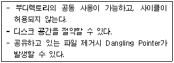
- 1단계 디렉토리 구조
- 2단계 디렉토리 구조
- 비순환 그래프 디렉토리 구조
- 트리 디렉토리 구조
(정답률: 48%)
67. 다음 중 운영체제의 기능에 해당하는 것은?
- 고급 언어를 기계어로 변환한다.
- 사용자에게 시스템 자원을 쉽고 효율적으로 사용할 수 있도록 한다.
- 데이터 구조의 정의, 데이터 조작, 데이터 제어 기능을 갖추고 비절차적 질의의 역할을 함당한다.
- 사용자와 데이터베이스사이에서 사용자의 요구에 따라 정보를 생성해 주고, 데이터베이스를 관리한다.
(정답률: 51%)
68. 파일 디스크립터에 대한 설명으로 옳지 않은 것은?
- 시스템이 필요로 하는 정보를 보관한다.
- 보조기억장치 내에 저장되어 있다가 해당 파일이 open 되면 주기억장치로 옮겨진다.
- 사용자가 직접 참조할 수 있다.
- 파일 제거 블록(FCB : File Control Block)이라고도 한다.
(정답률: 58%)
69. PCB(프로세스 제어블록)에 대한 설명으로 옳지 않은 것은?
- PCB는 프로세스가 종료된 후에도 삭제되지 않고 남아있다.
- PCB에는 프로세스의 상태에 대한 정보가 저장된다.
- PCB에는 프로세스의 프로그램 카운터 정보가 저장된다.
- PCB에는 프로세스의 입ㆍ출력 상태 정보가 저장된다.
(정답률: 66%)
70. 다섯 개의 프로세스들이 시간 0 에 표와 같은 순서로 도착한다고 가정해 보자. SJF스케줄링 알고리즘을 행하는 경우 평균대기 시간은 얼마인가?
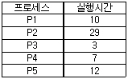
- 13
- 15
- 19
- 23
(정답률: 49%)
71. 다음 중 프로세스에 대한 정의로 거리가 먼 것은?
- 실행 중인 프로그램
- 한 프로그램을 이루는 여러 개의 작은 분할 프로그램
- 운영체제 내에 프로세스 제어 블록(PCB)의 존재로서 명시되는 것
- 비 동기적 행위를 일으키는 주체
(정답률: 45%)
72. 한 프로세스가 다른 프로세스보다 우선순위 등이 낮아 기다리게 되는 경우, 한번 양보하거나 일정 시간이 지나면 우선 순위를 한 단계씩 높여 줌으로써 오래 기다린 프로세스를 고려하여 무기한 지연을 해결하는 방법은?
- aging
- recovery
- avoidance
- priority
(정답률: 56%)
73. UNIX시스템의 특징으로 볼 수 없는 것은?
- UNIX시스템은 대화식 운영체제이다.
- UNIX시스템은 디렉토리 구조는 단층구조 형태이다.
- UNIX시스템은 멀티 태스킹(Multi-tasking)운영체제이다.
- UNIX시스템은 여러 사용자가 동시에 사용하는 멀티유저(Multi-user)운영체제이다.
(정답률: 67%)
74. 병렬처리의 주종(Master/Slave)시스템에 대한 설명으로 옳지 않은 것은?
- 주프로세서는 입ㆍ출력과 연산을 수행한다.
- 종프로세서는 입ㆍ출력 발생시 주프로세서에게 서비스를 요청한다.
- 종프로세서가 운영체제를 수행한다.
- 비대칭 구조를 갖는다.
(정답률: 63%)
75. UNIX에서 커널의 기능이 아닌 것은?
- 명령어 해독기능
- 프로세서 관리 기능
- 기억장치 관리 기능
- 입ㆍ출력 관리 기능
(정답률: 61%)
76. 모니터에 대한 설명으로 옳지 않은 것은?
- 모니터 외부의 프로세서는 모니터 내부의 데이터를 직접 액세스 할 수 있다.
- 모니터의 내부 공유 데이터를 액세스하려면 모니터의 프로시저를 호출해야 한다.
- 모니터에서는 wait 와 signal 연산이 사용된다.
- 한 순간에 하나의 프로세서만이 모니터에 진입할 수 있다.
(정답률: 44%)
77. 기억장치를 동적으로 분할해서 사용하는 경우 발생하는 단편화 문제를 해결하기 위한 방법으로 가장 적절한 것은?
- 체이닝(Chaining)
- 스풀링(Spooling)
- 동기화(Synchronization)
- 집약(Compaction)
(정답률: 39%)
78. 기억장치 관리전략 중 최적 적합(Best-Fit) 방법으로 배치할 때 그림과 같이 13K를 요구할 경우 어느 위치에 배치되는가?
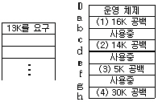
- (1)
- (2)
- (3)
- (4)
(정답률: 76%)
79. 페이지의 크기를 결정하기 위해서는 메모리 활용 여부와 디스크 I/O의 효율 등을 고려한다. 페이지 크기가 클 경우에 대한 설명으로 옳지 않은 것은?
- 마지막 페이지의 내부 단편화가 늘어난다.
- 디스크 접근 횟수가 줄어들어 I/O이동 효율이 좋아진다.
- 페이지 테이블의 크기가 작아진다.
- 메모리에 올라온 페이지들이 현재 구역성(locality)과 더욱 일치하는 내용만을 포함하게 된다.
(정답률: 39%)
80. 프로세스에게 4개의 페이지 프레임이 고정으로 할당되어 있고, 초기에 4개의 페이지 프레임들이 모두 비어 있다고 가정한다. 교체기법으로 LRU 알고리즘을 사용하는 경우에 다음 참조 스트링을 처리하는 동안 페이지 부재가 몇 회 발생하는가?
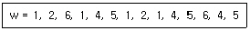
- 4회
- 5회
- 6회
- 7회
(정답률: 44%)
5과목: 정보통신개론
81. 디지털 데이터를 아날로그 신호로 변환하는 과정에서 두 개의 2진 값이 서로 다른 두 개의 주파수로 구분되는 변조방식은?
- ASK
- FSK
- PSK
- QPSK
(정답률: 53%)
82. 다음 중 셀룰러 시스템의 주요 구성이 아닌 것은?
- 이동국(MS)
- 기지국(BS)
- 이동전화 교환국(MTSO)
- 사설교환기(PBX)
(정답률: 64%)
83. 디지털 변ㆍ복조에 사용되는 방식이 아닌 것은?
- 동기편이방식
- 진폭편이방식
- 주파수편이방식
- 위상편이방식
(정답률: 63%)
84. 모뎀을 단말기에 접속할 때 적용하는 표준안(ITU-T V.24)은 어떤 내용인가?
- RS-232C 인터페이스방식이다.
- 조보식 국제 표준 전송속도를 나타낸다.
- 주파수 분할 다중화 방식을 말한다.
- 루프식 네트워크 구성방법이다.
(정답률: 47%)
85. 이동통신에서 여러 가입자가 채널을 공동으로 이용하는 다원접속 방식의 종류가 아닌 것은?
- 주파수분할 다원접속방식(FDMA)
- 시분할 다원접속방식(TDMA)
- 공간분할 다원접속방식(SDMA)
- 부호분할 다원접속방식(CDMA)
(정답률: 44%)
86. 다음 중 전송 오류의 주원인이 아닌 것은?
- 신호 감쇠
- 지연 왜곡
- 잡음
- 복조
(정답률: 67%)
87. OSI-7 계층 참조모델에서 프로세스 간에 대한 연결을 확립, 관리, 단절시키는 수단을 제공하는 계층은?
- Application Layer
- Session Layer
- Transport Layer
- Network Layer
(정답률: 43%)
88. 다음 중 잡음에 가장 민감한 것은?
- ASK
- PCM
- PSK
- DPSK
(정답률: 41%)
89. 양방향으로 데이터 전송이 가능하나, 한 순간에는 한쪽 방향으로만 전송이 이루어지는 방식은?
- 단반향방식
- 반이중방식
- 양방향방식
- 전이중방식
(정답률: 74%)
90. 비동기 전송모드(ATM)에 관한 설명으로 적합하지 않은 것은?
- ATM은 B-ISDN의 핵심 기술이다.
- Header는 5Byte, Payload는 48Byte이다.
- 정보는 셀(Cell) 단위로 나누어 전송된다.
- 저속 메시지 통신망에 적합하다.
(정답률: 54%)
91. 1600[baud] 변조속도로 4진 PSK 변조된 데이터 전송속도는 몇 [bps]인가?
- 800
- 1600
- 3200
- 6400
(정답률: 45%)
92. ISDN 채널에서 D채널의 용도는?
- 음성채널
- 사용자 서비스를 위한 채널
- 제어신호의 전송이나 저속의 데이터전송 채널
- 예비채널
(정답률: 58%)
93. 공중 데이터 통신망에서 패킷의 분해, 조립(PAD)과 관련된 국제표준화 기구의 권고안은?
- X.3
- X.28
- X.29
- X.32
(정답률: 26%)
94. 다음 중 뉴미디어의 분류에 속하지 않은 것은?
- 방송계
- 통신계
- 패키지계
- 정보계
(정답률: 39%)
95. 다음 전송제어문자 중 본문의 시작을 알리는 것은?
- STX
- ETX
- DLE
- NAK
(정답률: 66%)
96. 다음 중 통계적 다중화 장치에 해당하지 않은 것은?
- 실제로 보낼 데이터가 있는 터미널에만 동적인 방식으로 각 부채널에 타임 슬롯을 할당하는 방식이다.
- 마이크로프로세서의 이용으로 타임 슬롯의 배정이 가능하여 지능형 다중화 장치라고도 한다.
- 상대적으로 느린 단말기가 고속의 데이터 전송로를 통해 데이터를 주고 받을 때 선로를 최대한 활용하도록 하는 방식이다.
- 각각의 입력회선을 N개의 출력선으로 집중화하는 장치이다.
(정답률: 33%)
97. 통신회선을 기간통신사업자로부터 임차하여 망을 구축하고 이를 이용 축적된 정보를 서비스하는 것은?
- LAN
- MAN
- VAN
- WAN
(정답률: 56%)
98. 다음 중 DTE와 DTE 간에 RS-232C에 의한 직접접속(null modem)시 불필요한 것은?
- GND
- TxD
- RxD
- RTS
(정답률: 54%)
99. 프로토콜 전송방식 중 특정한 플래그를 메시지의 처음과 끝에 포함시켜 전송하는 방식은?
- 비트방식
- 문자방식
- 바이트방식
- 워드방식
(정답률: 49%)
100. 다음 중 패킷교환 방식에 관한 설명으로 틀린 것은?
- 메시지 단위로 전송한다.
- 축적교환 방식의 일종이다.
- 속도와 코드가 다른 시스템 간에도 통신이 가능하다.
- 장애 발생시 대체 경로 선택이 가능하다.
(정답률: 44%)
인접행렬은 그래프의 각 정점들이 어떤 정점들과 연결되어 있는지를 나타내는 행렬이다. 이 그래프에서는 1번 정점과 2, 3, 4번 정점이 연결되어 있고, 2번 정점과 3번 정점이 연결되어 있으며, 3번 정점과 4번 정점이 연결되어 있다. 따라서 인접행렬은 다음과 같다.
```
0 1 1 1
1 0 1 0
1 1 0 1
1 0 1 0
```
이 인접행렬을 그래프로 나타내면 다음과 같다.
```
1 -- 2
| |
| |
| |
4 -- 3
```
따라서 정답은 ""이다.